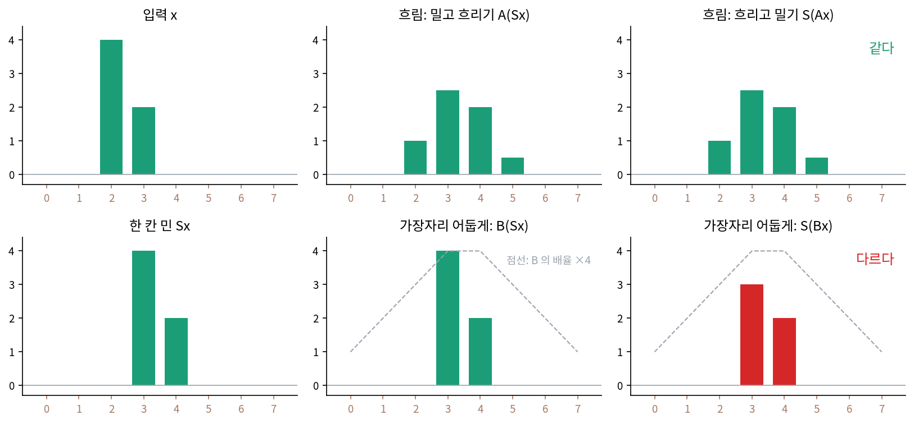
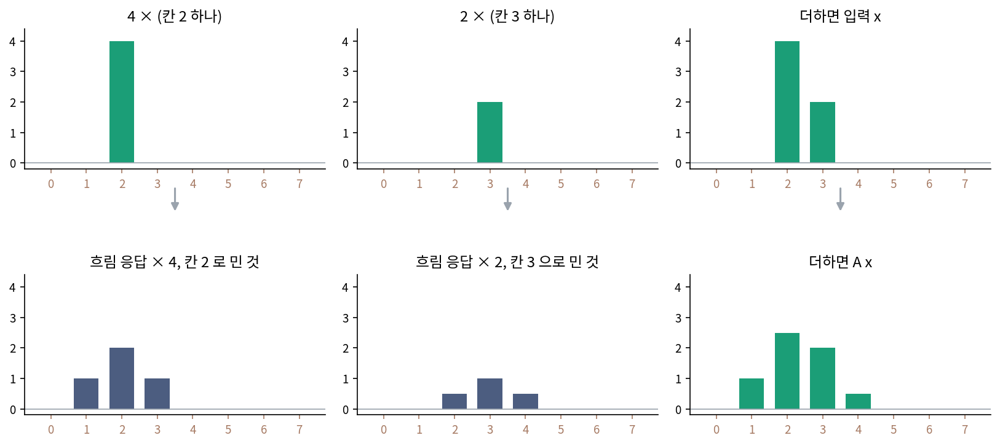
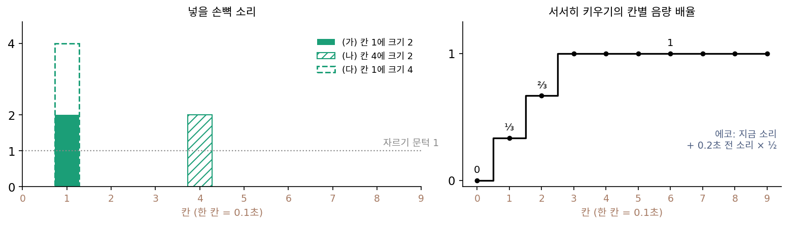
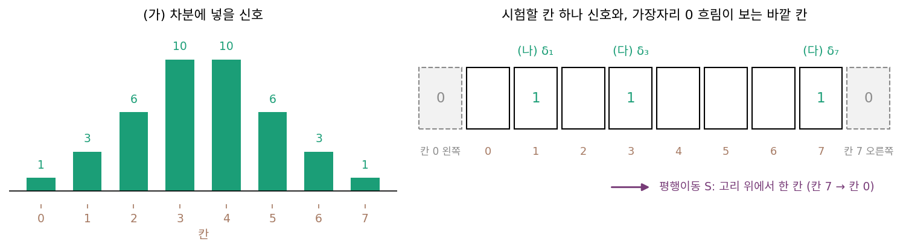
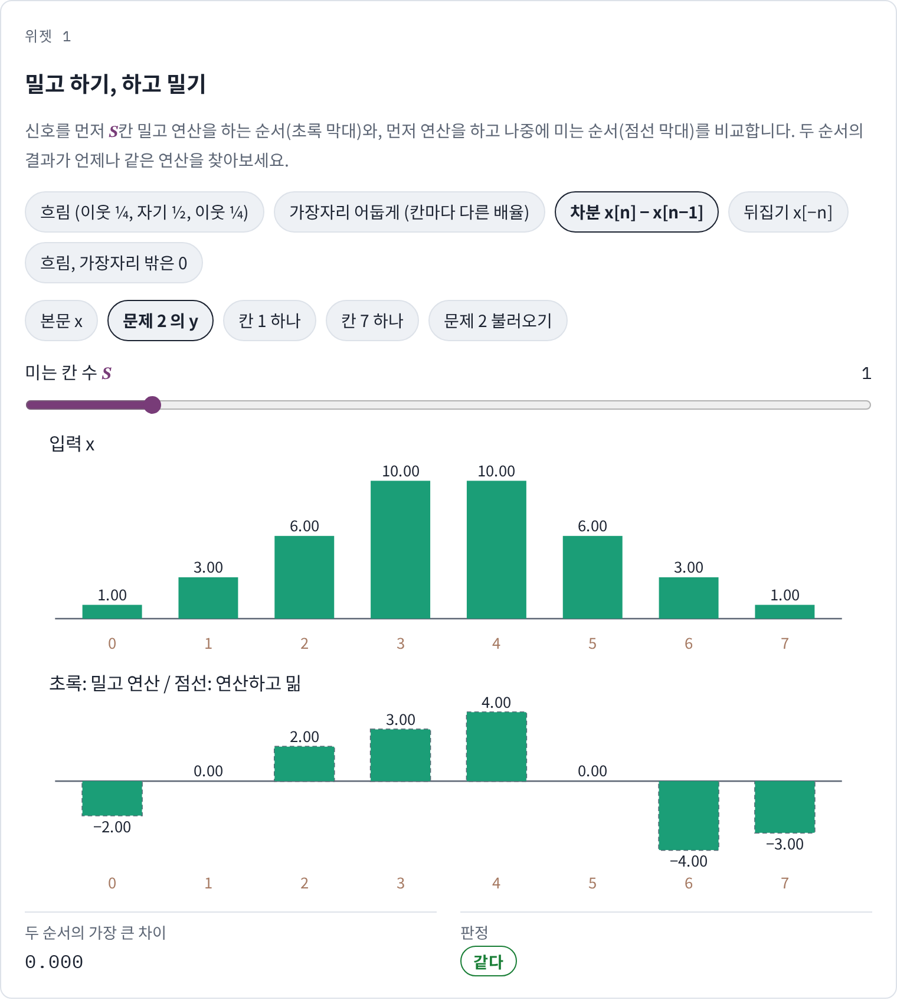
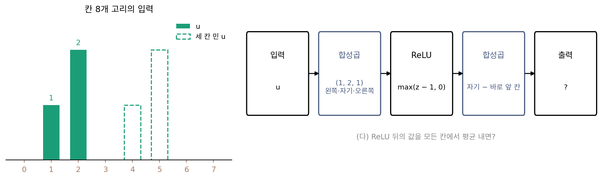

평행이동 대칭: 왜 하필 사인과 코사인인가
이 장의 물음
지금까지 신호를 여러 번 사인·코사인 물결로 다시 적었다. 주기 함수는 주파수가 정수배인 물결의 합으로, 닫힌 곡선은 도는 화살표의 합으로, 칸 N개짜리 신호는 이산 푸리에 변환으로 물결 N개의 계수로 바꿨다. 그런데 축을 바꿔 다시 적는 일 자체는 물결이 아니어도 할 수 있었다. 서로 직교하는 축이면 어떤 묶음이든 계수를 내적으로 구할 수 있고, 제곱합도 그대로 지켜진다. 축이 될 후보는 셀 수 없이 많은데, 공학과 물리와 ML은 왜 하필 사인과 코사인에 이렇게 자주 돌아올까?
휴대폰 사진 앱의 흐림 효과는 얼굴이 사진 왼쪽에 있든 오른쪽에 있든 같은 방식으로 흐린다. 음악 앱의 이퀄라이저도 노래를 1초 늦게 틀면 결과가 1초 늦게 나올 뿐 다른 소리를 내지 않는다. 그림을 읽는 합성곱 신경망의 층은 그림의 모든 자리에서 같은 합성곱 커널을 쓴다. 이런 연산은 무게를 어떻게 고르느냐에 따라 끝없이 많은데, 모두 사인·코사인과 각별한 사이라는 말을 자주 듣는다. 그 사이는 어디서 생길까?
이 장은 다음 물음에 차례로 답한다.
- 「신호를 어디로 옮겨도 연산의 규칙이 같다」는 성질을 숫자로 시험할 수 있을까? 규칙이 자리마다 같다는 사실 하나로 연산 전체를 알아낼 수 있을까?
- 그런 연산마다 행렬이 다른데, 모든 행렬이 모양을 바꾸지 않고 수만 곱하는 공통의 축이 있을까?
- 그 축으로 옮기면 이웃에 무게를 곱해 더하는 계산은 무엇으로 바뀔까? 실제로 더 빨라질까?
- 필터 하나가 어떤 물결은 살리고 어떤 물결은 지우는지 한눈에 읽는 방법은 무엇일까?
선형 시불변 연산: 어느 자리에나 같은 규칙을 쓰는 필터
사진 앱의 흐림, 이퀄라이저, 합성곱 신경망의 층은 하는 일이 제각각인데도 셋 다 「자리를 옮겨도 같은 규칙으로 계산한다」는 말로 소개된다. 이 말은 느낌으로는 분명한데, 막상 어떤 연산이 자리마다 같은 규칙을 쓰는지 따지려면 무엇을 계산해 봐야 할지 막막하다. 그리고 규칙이 자리마다 같다는 사실이 연산에 대해 얼마나 많은 것을 알려 주는지도 궁금하다. 성질 하나를 안다고 연산 전체를 알 수 있을까?
칸 8개 신호를 밀고 흐리기
손으로 따라갈 수 있게 칸 8개짜리 신호 x = (0, 0, 4, 2, 0, 0, 0, 0)을 쓰자. 칸 번호는 0부터 7이고, 칸 7의 오른쪽 이웃은 칸 0이라고 정해 신호의 끝과 처음이 이어진 고리로 본다. 가장자리에서 이웃이 하나 모자라는 문제를 잠시 피하려는 약속이고, 이 약속을 빼면 무엇이 달라지는지는 아래 문제 2에서 본다.
연산 둘을 준비하는데, 하나는 사진 앱의 흐림을 칸으로 흉내 낸 것이다. 칸마다 새 값 = ¼ × 왼쪽 이웃 + ½ × 자기 + ¼ × 오른쪽 이웃. 다른 하나는 사진 가장자리를 어둡게 하는 효과로, 칸마다 정해진 배율 (0.25, 0.5, 0.75, 1, 1, 0.75, 0.5, 0.25)을 곱한다. 그리고 신호 전체를 오른쪽으로 한 칸 미는 일을 S라 부르자. Sx = (0, 0, 0, 4, 2, 0, 0, 0)이다.
이제 두 순서를 견준다. 먼저 밀고 나중에 연산하기, 먼저 연산하고 나중에 밀기.
| 먼저 밀고 연산 | 먼저 연산하고 밂 | |
|---|---|---|
| 흐림 | (0, 0, 1, 2.5, 2, 0.5, 0, 0) | (0, 0, 1, 2.5, 2, 0.5, 0, 0) |
| 가장자리 어둡게 | (0, 0, 0, 4, 2, 0, 0, 0) | (0, 0, 0, 3, 2, 0, 0, 0) |
흐림은 두 순서의 결과가 같지만, 가장자리 어둡게는 칸 3의 값이 4와 3으로 갈린다. 먼저 밀면 값 4가 배율 1인 칸 3에서 곱해지고, 먼저 곱하면 값 4가 배율 0.75인 칸 2에서 곱해진 뒤 밀리기 때문이다. 칸마다 규칙이 다른 연산은 신호가 어디 있느냐에 따라 다른 일을 한다.

흐림에는 성질이 하나 더 있다. 두 신호를 더한 뒤 흐린 것은 따로 흐려 더한 것과 같고, 신호를 두 배로 하면 흐린 결과도 두 배다(선형). 이 두 성질을 함께 쓰면 놀라운 일이 생긴다. x는 「칸 2에만 4」와 「칸 3에만 2」의 합이어서, 칸 하나에만 1이 있는 신호를 δ(델타)로 적으면 x = 4δ₂ + 2δ₃이다. 선형이니 x를 흐린 결과는 δ₂를 흐린 결과의 4배와 δ₃을 흐린 결과의 2배를 더한 것이다. 그리고 δ₂는 δ₀을 두 칸 민 것이므로, 순서를 바꿔도 되는 성질 덕에 δ₂를 흐린 결과는 δ₀을 흐린 결과를 두 칸 민 것과 같다. δ₀을 흐리면 (½, ¼, 0, 0, 0, 0, 0, ¼)이 나온다. 결국 x를 흐린 결과 (0, 1, 2.5, 2, 0.5, 0, 0, 0)은 이 여덟 숫자를 밀고 키워 더하기만 하면 나온다.

칸 0 하나에 대한 응답 하나가 연산 전체를 정한다. 이 여덟 숫자를 h라 부르면, 입력 x에서 출력 y를 얻는 규칙은 모든 칸에서 같은 원형 합성곱 식으로 적힌다.
왼쪽 식은 이웃에 무게를 곱해 더하는 원형 합성곱이고, 오른쪽 식은 「먼저 밀고 연산 = 먼저 연산하고 밂」을 기호로 적은 것이다. 선형이면서 평행이동과 순서를 바꿔도 되는 연산을 선형 시불변 연산 (모든 자리에 같은 규칙을 쓰는 선형 연산 / linear time-invariant operator, LTI)이라 한다. 「시불변」은 연산의 규칙이 시각(신호 처리에서는 칸 번호를 흔히 시각이라 부른다)에 따라 바뀌지 않는다는 뜻이다. 출력이 그대로라는 뜻은 아니고, 입력을 밀면 출력도 따라 밀린다. 위 계산이 보여 준 것은, 선형 시불변 연산이면 반드시 어떤 h로 원형 합성곱하는 꼴이고, 그 h는 칸 하나를 넣어 보면 얻는다는 것이다. 이 장에서는 이런 연산을 필터라고도 부른다.
흐림 연산을 8 × 8 행렬로 적어 보면 둘째 행은 첫 행 (½, ¼, 0, 0, 0, 0, 0, ¼)을 오른쪽으로 한 칸 민 것이고, 셋째 행은 그것을 또 한 칸 민 것이다. 모든 칸에서 같은 무게 (¼, ½, ¼)를 쓰니 행렬의 행도 서로 밀어 놓은 꼴이 되는데, 이 모양은 곧 다시 쓰인다.
ML에서: 합성곱 층은 평행이동을 따라간다
합성곱 신경망의 한 층은 그림의 모든 자리에서 같은 합성곱 커널로 이웃을 곱해 더한다. 그래서 입력 그림을 밀면 특징 지도도 함께 밀린다. 칸 32개짜리 무작위 신호(씨앗 0)에 무작위 무게 세 칸의 합성곱 층을 걸어 확인해 보면, 가장자리 밖을 고리처럼 이어 붙인 경우(원형 패딩) 「밀고 층에 넣기」와 「층에 넣고 밀기」의 차이는 0이다. 실제 신경망처럼 가장자리 밖을 0으로 채우고, 밀 때 빈자리도 0으로 채우면 차이가 두 칸에서만 생긴다. 밀려 들어온 0과 원래 내용이 맞닿은 칸 4와, 내용이 화면 밖으로 잘려 나간 오른쪽 끝 칸 31이다. 나머지 30칸은 그대로 따라간다. 이렇게 입력을 옮기면 출력도 같이 옮겨지는 성질에는 따로 이름이 있고, 대칭을 모아 다루는 자리에서 다시 정식으로 만난다. 신경망 전체는 선형이 아니라서, 선형 시불변 연산의 성질 가운데 무엇이 살아남는지는 아래 문제 3에서 따진다.
문제 1. 노래방 효과 세 가지
노래방 기계의 효과 셋을 칸 10개(칸 하나 = 0.1초)의 소리로 시험한다. 에코는 「지금 소리 + 0.2초 전 소리의 절반」, 서서히 키우기는 처음 0.3초 동안 음량 배율을 0, ⅓, ⅔ 로 올리고 그 뒤로는 1, 자르기는 크기가 1을 넘는 소리를 1로 자른다. (가) 칸 1에 크기 2인 손뼉 소리를 넣으면 효과마다 무엇이 나오는가? (나) 같은 손뼉을 0.3초 늦게(칸 4에) 넣으면, 결과는 (가)의 결과를 세 칸 민 것과 같은가? (다) 손뼉 크기를 4로 두 배 하면 결과도 두 배인가? 세 효과 가운데 선형 시불변 연산은 무엇인가?


(가)는 에코가 칸 1에 2, 칸 3에 1이고요. 서서히 키우기는 칸 1 배율이 ⅓이라 0.67, 자르기는 2가 1로 잘려서 칸 1에 1이요. (나)는 다 그냥 세 칸 밀리겠죠. 같은 손뼉이니까요.

서서히 키우기에 칸 4의 손뼉을 넣으면 칸 4의 배율은 얼마죠?

아, 칸 4는 이미 배율 1이에요. 그럼 결과가 칸 4에 2라서, (가)를 민 0.67과 달라요. 효과가 시작한 지 얼마나 됐는지에 따라 규칙이 바뀌네요. 에코랑 자르기는 세 칸 민 것과 같고요.

(다)에서는 자르기가 걸려. 손뼉 4를 넣으면 칸 1에 1이 나오는데, (가)의 두 배면 2여야 하잖아. 큰 소리일수록 덜 키우니까 선형이 아니야. 서서히 키우기는 배율을 곱하기만 하니까 두 배는 두 배로 나와서 선형은 맞고.

그래요. 서서히 키우기는 선형이지만 시불변이 아니고, 자르기는 시불변이지만 선형이 아니에요. 둘 다 갖춘 것은 에코 하나예요. 에코의 칸 하나 응답은 뭐였죠?

크기 1 손뼉이면 지금 1, 두 칸 뒤 0.5요. 그 두 숫자만 알면 어떤 노래를 넣어도 결과를 계산할 수 있겠네요. 조교님이 채점 기준표 하나로 모든 답안을 채점하던 거랑 같아요. 답안이 몇 번째로 제출됐는지는 안 보고요.
문제 2. 차분, 뒤집기, 가장자리를 0으로 둔 흐림
칸 8개 고리 위의 연산 셋을 본다. 차분은 y[n] = x[n] − x[n−1], 뒤집기는 y[n] = x[−n](번호는 8로 나눈 나머지), 가장자리 0 흐림은 흐림과 같은 무게(¼, ½, ¼)를 쓰되 칸 0의 왼쪽과 칸 7의 오른쪽을 0으로 본다. 평행이동은 지금처럼 고리 위에서 한 칸 민다. (가) 차분의 칸 하나 응답은 무엇인가? 신호 (1, 3, 6, 10, 10, 6, 3, 1)로 두 순서의 결과를 비교하라. (나) 뒤집기는 선형인가? δ₁(칸 1에만 1)로 두 순서를 비교하라. (다) 가장자리 0 흐림을 δ₃과 δ₇로 시험하라. (위젯 1의 「문제 2 불러오기」로 확인해 보자.)

(가)는 δ₀을 넣으면 칸 0에 1, 칸 1에 −1이야. 신호로는 두 순서 다 (−2, 0, 2, 3, 4, 0, −4, −3)이 나와. (나) 뒤집기는 칸마다 자리만 바꾸니까 선형이고, 모든 칸에 같은 규칙 「번호에 마이너스」를 쓰니까 순서를 바꿔도 될 것 같아.
δ₁로 직접 해 봐요.

먼저 밀면 δ₂가 되고, 뒤집으면 칸 −2인데 고리에서는 칸 6이야. 먼저 뒤집으면 δ₇이 되고, 밀면 칸 0이고. 6과 0으로 갈리네. 규칙은 모든 칸에 같은 꼴인데 왜 그러지?
「번호에 마이너스」를 해도 제자리에 남는 칸이 있어요. 어디죠?

칸 0이요. 고리에서는 칸 4도요. 아, 규칙이 칸 번호 자체를 쓰고 있어서 칸 0이 기준점이 되는 거예요. 그러니 신호가 어디 있느냐가 결과를 바꿔요.
(다)는 δ₃이면 두 순서 다 (0, 0, 0, 0.25, 0.5, 0.25, 0, 0)이에요. 같은 무게를 쓰니까 시불변이겠죠.

δ₇도 해 봐요.
먼저 밀면 δ₀이고 흐리면 (0.5, 0.25, 0, …, 0)이요. 먼저 흐리면 칸 7 오른쪽이 0이라 칸 6에 0.25, 칸 7에 0.5인데, 밀면 칸 7의 0.5는 칸 0으로, 칸 6의 0.25는 칸 7로 가서 (0.5, 0, 0, 0, 0, 0, 0, 0.25)요. 칸 1에 있어야 할 0.25가 칸 7에 가 있어요. 달라요. 가운데 칸에서는 같고 가장자리에서만 깨지네요.
그래요. 고리라는 약속을 빼면 가장자리 칸만 규칙이 달라지고, 그만큼 시불변이 깨져요. 이 장에서 고리를 고집하는 게 그래서예요.

선형대수 수업에서 「모든 원소에 같은 규칙」이라고 해서 기준점까지 없는 건 아니라고 배웠는데, 뒤집기가 그 예네.

문제 3. ReLU 를 끼운 합성곱 두 층
칸 8개 고리에서 합성곱(무게: 왼쪽 1, 자기 2, 오른쪽 1) → ReLU(바이어스 −1. 식으로는 max(z − 1, 0)) → 합성곱(자기 − 바로 앞 칸)으로 이어진 작은 신경망을 본다. 입력 u = (0, 1, 2, 0, 0, 0, 0, 0). (가) u 를 세 칸 밀고 넣은 결과와, 넣은 결과를 세 칸 민 것을 비교하라. (나) δ₂ 와 δ₃ 을 따로 넣어 더한 결과와 δ₂ + δ₃ 을 넣은 결과를 비교하고, 2δ₂ 도 시험하라. (다) ReLU 뒤의 값을 모든 칸에서 평균 내면, u 와 세 칸 민 u 의 평균은 어떻게 되는가?

코드로 돌려 봤어요. (가)는 (0, 0, 0, 0, 3, 1, −3, −1)로 둘 다 같아요. ReLU 가 들어갔는데도 밀림을 따라가네요. 그럼 이것도 선형 시불변 연산이니까 칸 하나 응답만 알면 되겠어요. δ₂를 넣으면 (0, 0, 1, −1, 0, 0, 0, 0)이에요.
그 응답으로 δ₂ + δ₃ 의 결과를 맞혀 볼래요?
δ₃은 한 칸 민 (0, 0, 0, 1, −1, 0, 0, 0)이니까 더하면 (0, 0, 1, 0, −1, 0, 0, 0)인데… 직접 넣으면 (0, 0, 2, 0, −2, 0, 0, 0)이에요. 안 맞아요.
2δ₂ 도 (0, 1, 2, −2, −1, 0, 0, 0)이라 응답의 두 배 (0, 0, 2, −2, 0, 0, 0, 0)과 달라. 어딘가 선형이 아닌 데가 있나 봐.
세 단계 가운데 어디가 의심스러워요?
ReLU 요. 칸마다 같은 규칙이니까 밀림은 따라가지만, 바이어스 −1 때문에 작은 값은 지우고 큰 값은 남겨서 선형이 아니에요.
그래요. 「어디서나 같은 규칙」은 비선형 층을 지나도 살아남아요. 그런데 「칸 하나 응답이 전부를 정한다」는 선형이어야만 성립해요. (다)는요?
둘 다 1.0이에요. 평균은 칸 순서를 섞어도 같으니까, 밀어도 결과가 아예 안 바뀌어. 앞의 층들은 밀림을 따라가고, 마지막 평균이 그걸 지우는 거네.

분류기 끝에 전체 평균 풀링을 두는 게 그래서구나. 고양이가 사진 어디에 있든 「고양이」 점수는 같게 나오도록요. 보고서 표지를 왼쪽에 붙이든 가운데 붙이든 점수가 같아야 공평한 것처럼요.